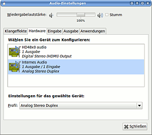

Soundkarten konfigurieren
Dieser Artikel wurde für die folgenden Ubuntu-Versionen getestet:
Dieser Artikel ist größtenteils für alle Ubuntu-Versionen gültig.
Zum Verständnis dieses Artikels sind folgende Seiten hilfreich:
Viele Soundkarten werden bereits bei der Installation von Ubuntu erkannt und eingerichtet. Sollte dies nicht der Fall sein, ist es möglich, diese von Hand einzurichten. Wie das geht, soll hier erklärt werden. Die Einrichtung von HDA-Soundchips, welche vor allem in neueren Mainboards und Notebooks verbaut sind, ist in einem eigenen Artikel beschrieben.
Soundtreiber¶
In der Datei /proc/asound/cards sind die von Linux erkannten Soundkarten aufgeführt. Hierunter fallen auch TV-Karten, da auch diese eine Sound-Ausgabe besitzen. Den Inhalt der Datei kann man mit diesem Befehl im Terminal[1] anzeigen lassen:
cat /proc/asound/cards
Die Ausgabe sieht dann zum Beispiel so aus:
0 [V8235 ]: VIA8233 - VIA 8235
VIA 8235 at 0xdc00, irq 193
1 [Bt878 ]: Bt87x - Brooktree Bt878
Brooktree Bt878 at 0xdddff000, irq 177In diesem Fall ist Nummer 0 (VIA8233) der auf dem Mainboard verbaute Soundchip und Nummer 1 (Bt878) die ebenfalls installierte TV-Karte, wobei hier jeweils nicht der Hersteller, sondern der Chipsatz angegeben ist.
Soundkarte einrichten¶
Wenn die Soundkarte nicht automatisch von ALSA erkannt wird, muss man wie im folgenden beschrieben den Treiber der Soundkarte manuell laden.
Chipsatz¶
Zunächst muss man den Chipsatz der Soundkarte ermitteln. Der entsprechende Befehl für das PCI-System lautet:
lspci | grep -i audio
Falls man eine externe USB-Soundkarte bzw. ein USB-Headset hat, kann man den Chipsatz mit dem folgenden Befehl ermitteln.
lsusb
Erhält man auch hier keine Ausgabe, die auf eine Soundkarte schließen lässt, besteht leider nur eine sehr geringe Chance, die Soundkarte nutzen zu können. Eine Möglichkeit besteht darin, diese Problemlösung zu probieren, ansonstens kann die Suche im Forum helfen.
Passenden Treiber finden¶
Nun muss man versuchen, das passende Kernelmodul für seine Soundkarte zu finden. Die Eingrenzung der Kernelmodule erfolgt mit dem Befehl grep in Kombination mit snd und den Informationen über den Chipsatz. zum Beispiel:
basename -s ".ko" $(find /lib/modules/$(uname -r) -type f -name "*.ko" | grep snd | grep via)
Man kann auch versuchen, über eine Suchmaschine die passenden Kernelmodule zu finden.
Eine Eingrenzung auf snd ist in jedem Fall erforderlich.
Da nur mit dieser sehr viel auflistet wird, ist eine weitere Eingrenzung sinnvoll, dies ist im Beispiel mit via geschehen. Um die Suche für seine eigene Hardware einzugrenzen, kann die Ausgabe von hwinfo helfen (siehe unten).
Treiber ausprobieren¶
Den gefundenen Treiber kann man jetzt (wie jeden anderen Treiber auch) mit dem Befehl modprobe laden:
sudo modprobe snd-via82xx
Die Endung .ko nicht mit angeben. Bei einer Fehlermeldungen sollte ein anderes Modul probieren, ansonsten kann man im Forum um Hilfe bitten. Wenn keine Fehlermeldung erscheint, wurde das Modul geladen. Dies lässt sich mit dem Befehl[1]
cat /proc/asound/cards
überprüfen. Jetzt sollte in /proc/asound/cards eine Karte aufgeführt sein.
Optionale Parameter¶
Einige Soundkarten benötigen optionale Parameter beim Laden des Modules, da die automatische Erkennung nicht funktioniert. Informationen hierzu findet man in der Dokumentation von ALSA. Mit dem Befehl
zless /usr/share/doc/alsa-base/driver/ALSA-Configuration.txt.gz
öffnet man diese Datei. Anschließend sucht man in der Datei nach dem passenden Modulnamen und prüft, ob eventuelle Parameter für die Soundkarte vorhanden sind. Den passenden Parameter übergibt man anschließend dem Modul beim Laden desselben. Um eine Karte als die erste zu ladende festzulegen, hängt man noch den Parameter "index=0" an. Eine zweite Karte hätte dann den Parameter "index=1".
Treiber beim Systemstart laden¶
Methode 1: Hierzu muss man das richtige Modul nur wie in [4] beschrieben in die /etc/modules eintragen. Optionale Parameter hängt man einfach hinten an. Beispiel:
snd-ice1724 model=aureon51 index=0
Methode 2: Man kann auch mit ALSA direkt kommunizieren, um die Parameter zu übergeben. Dies tut man in der Datei /etc/modprobe.d/alsa-base.conf. Die Parameter werden wie bei Methode 1 übergeben, jedoch wird ein "options" vorangestellt. Beispiel:
options snd-ice1724 model=aureon51 index=0
Soundkarte wird nicht erkannt¶
Schon oft wurde das Problem beschrieben, dass die Soundkarte (oder eine andere PCI-Peripherie) nicht von Ubuntu erkannt wird. Das Deaktivieren von ACPI könnte vielleicht das Problem lösen. Dazu muss dem Kernel beim Booten die Option acpi=off mitgegeben werden.
Dies kann man mit Hilfe des Bootloaders GRUB (Version 1/legacy) erreichen, indem man die Option in der Konfigurationsdatei mit anführt. Hierzu muss die /boot/grub/menu.lst mit Root-Rechten editiert [3] werden. Im Abschnitt Start Default Options fügt man die Option acpi=off hinzu:
## ## Start Default Options ## ## default kernel options ## default kernel options for automagic boot options ## If you want special options for specific kernels use kopt_x_y_z ## where x.y.z is kernel version. Minor versions can be omitted. ## e.g. kopt=root=/dev/hda1 ro ## kopt_2_6_8=root=/dev/hdc1 ro ## kopt_2_6_8_2_686=root=/dev/hdc2 ro # kopt=root=/dev/hdXY ro acpi=off
Danach muss die Datei gespeichert und update-grub im Terminal [1] ausgeführt werden:
sudo update-grub
Nach einem Neustart des Systems wird die Soundkarte eventuell erkannt.
Hinweis: Unter Umständen kann es zu einem Fehler, ähnlich dem Folgenden, beim Systemstart kommen:
Boot from (hd0,0) ext3 40b79af5-6193-4889-9c49-52eea34d3331 Starting up ... PNPBIOS fault.. attempting recovery. PnPBIOS: Warning! Your PnP BIOS caused a fatal error. Attempting to continue PnPBIOS: You may need to reboot with the "pnpbios=off" option to operate stably PnPBIOS: Check with your vendor for an updated BIOS PnPBIOS: get_dev_node: unexpected status 0x37
Beim Auftreten dieses Fehlers sollte man Ubuntu mit der Desktop-CD starten und /boot/grub/menu.lst zurücksetzen (siehe Foreneintrag).
Der Nachfolger von Grub legacy - GRUB 2 - lässt sich nicht auf diese Weise einstellen.
hwinfo benutzen¶
Sollte dies immer noch nicht der Fall sein, kann man das Programm hwinfo nutzen und mittels
hwinfo --sound
die Ausgabe auf die Soundkarte einschränken. Falls es Ausgaben gibt, konnte hwinfo die Soundkarte erkennen und gibt in vielen Fällen auch den Treiberstatus sowie den Befehl zum Aktivieren des Treibers aus:
[...] Driver Info #0: Driver Status: i810_audio is not active Driver Activation Cmd: "modprobe i810-audio"
Befehle wie modprobe [4] müssen dabei mit Root-Rechten ausgeführt werden.

Soundkarte ist stumm, obwohl sie unter dem Livesystem funktioniert und auch vom System erkannt wurde¶
Getestet unter Ubuntu 9.10¶
Wenn im Lautstärkeregler (rechte Maustaste  -> "Audioeinstellungen -> Hardware -> Wählen Sie ein Gerät zum Konfigurieren") keine Soundkarte auftaucht, obwohl die Module ordnungsgemäß geladen wurden, könnte folgender Workaround helfen:
-> "Audioeinstellungen -> Hardware -> Wählen Sie ein Gerät zum Konfigurieren") keine Soundkarte auftaucht, obwohl die Module ordnungsgemäß geladen wurden, könnte folgender Workaround helfen:
sudo alsa reload
ergibt eventuell eine Ausgabe wie diese:
lsof: WARNING: can't stat() fuse.gvfs-fuse-daemon file system /home/frank/.gvfs
Output information may be incomplete.
/sbin/alsa: Warning: Processes using sound devices: 1860(pulseaudio). Der betreffende Prozess muss beendet werden. Zum Beispiel mit:
kill -15 1860
Wenn sudo alsa reload sauber durchläuft, sollte der Sound funktionieren. Nun können die gewünschten Lautstärken eingestellt werden. Mit dem Befehl
sudo alsactl store
lassen sich die Einstellungen dauerhaft speichern.
Erhält man folgende Fehlermeldung: "Home directory /home/<user> not ours.", dann muss man die Zugriffsrechte anpassen:
sudo chmod 666 /var/lib/alsa/asound.state
Nun kann man alsactl store ohne sudo ausführen:
alsactl store
Reihenfolge (Priorität) von Soundkarten Ändern¶
Sowohl Gnome als auch KDE bieten in den Systemeinstellungen die Möglichkeit, die Reihenfolge der Soundkarten zu bestimmen. Das funktioniert jedoch nur für native Anwendungen, wie z.B. Amarok unter Kubuntu. Näher am System ist die Konfiguration über Alsa. Das ist dann nützlich, wenn man z.B. unter Kubuntu Musik-Streams am Headset hören möchte.
So erhält man eine menschenlesbare Liste der Soundkarten:
cat /proc/asound/cards
0 [Intel ]: HDA-Intel - HDA Intel
HDA Intel at 0xf0500000 irq 22
1 [Headset ]: USB-Audio - Logitech USB Headset
Logitech Logitech USB Headset at usb-0000:00:1d.0-1, full speedUnd die Liste der entsprechenden Kernel-Module mit
cat /proc/asound/modules
0 snd_hda_intel 1 snd_usb_audio
Die Reihenfolge lässt sich nun wie folgt ändern:
sudo bash echo options snd_usb_audio index=0 >> /etc/modprobe.d/sound-cards-order echo options snd_hda_intel index=1 >> /etc/modprobe.d/sound-cards-order exit
Jetzt noch ein Neustart und fertig.
sudo reboot
Um diese Änderungen rückgängig zu machen, löscht man /etc/modprobe.d/sound-cards-order und startet neu.
- Erstellt mit Inyoka
-
 2004 – 2017 ubuntuusers.de • Einige Rechte vorbehalten
2004 – 2017 ubuntuusers.de • Einige Rechte vorbehalten
Lizenz • Kontakt • Datenschutz • Impressum • Serverstatus -
Serverhousing gespendet von